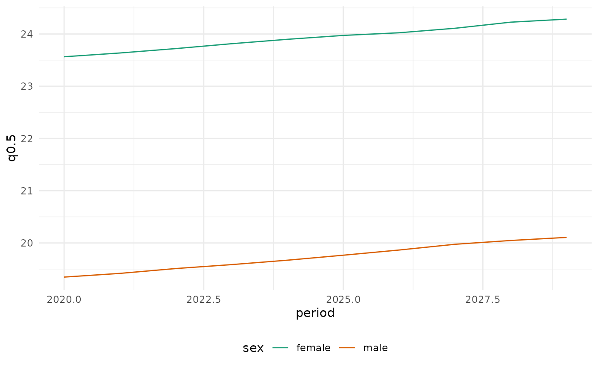

The plots of mortensor share one layout: a minimal theme, observed values
as small transparent points, fitted values as solid lines, forecast
medians as dashed lines with light interval ribbons, and a dotted vertical
line between the last observed and the first forecast year. Strata with
ordered levels (such as deprivation quintiles Q1 to Q5) are coloured
on a red-yellow-green scale, other strata (causes, regions, models) with
distinct colours (12 distinct colours; more are interpolated).
Arguments
- base_size
Base font size.
- legend
Legend position.
- n
Number of colours.
- type
"ordered"(red to green) or"categorical".- reverse
Reverse the order of the colours.
- ...
Passed to
ggplot2::discrete_scale().
Value
theme_mortensor(): a ggplot2 theme; the scales: ggplot2 scales;
mt_palette(): a character vector of colours.
Details
theme_mortensor(): the theme (ggplot2::theme_minimal()with the legend at the bottom);scale_colour_mortensor(),scale_fill_mortensor(): the colour scales, for your own plots of mortensor results;mt_palette(): the colours themselves.
The ordered scale runs from red (first level) to green (last level), with
a dark yellow in the middle that stays visible on white; reverse = TRUE
turns it around. Which end is red is a decision about the data: with the
Index of Multiple Deprivation, Q1 is the most deprived quintile.
Examples
mt_palette(5)
#> [1] "#D7191C" "#FDAE61" "#D9B526" "#A6D96A" "#1A9641"
if (requireNamespace("ggplot2", quietly = TRUE)) {
x <- mt_example(deaths = "single")
fc <- mt_forecast(mt_fit(lee_carter(), x), h = 10, n_draws = 100, seed = 1)
e <- life_expectancy(fc, at = 65)
ggplot2::ggplot(e, ggplot2::aes(period, q0.5, colour = sex)) +
ggplot2::geom_line() +
scale_colour_mortensor(type = "categorical") +
theme_mortensor()
}
